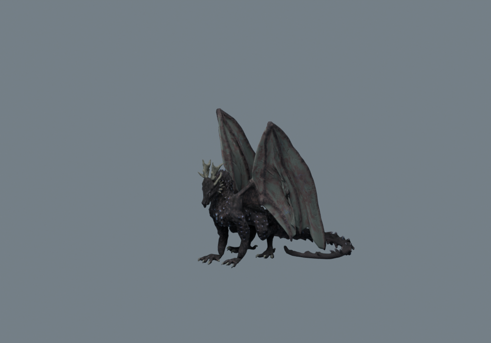
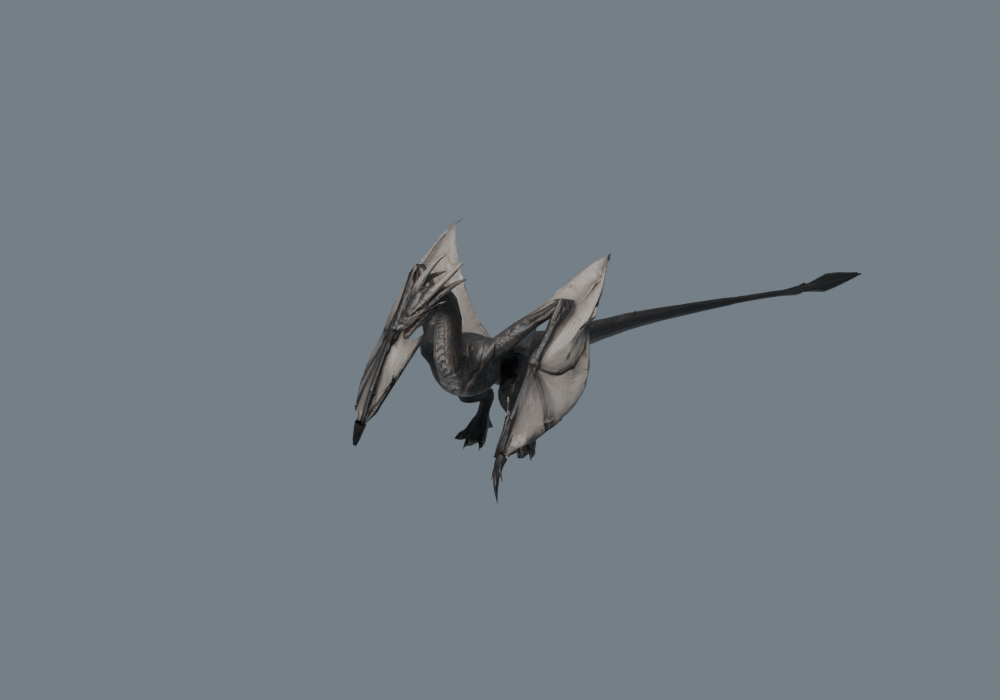

External asset evidence · 10 November 2026 · Different cameras and scales; appearance comparison only. No verified mount winner.

European Dragon · Regina Cachoa
Actual licensed GLB, Blender render · Idle Stand Free CC BY 4.0 · 42,338 triangles measured Standing/folded and flight clips exist; no takeoff or landing clips.Creator/source

Ashwing family · Literock Studios
Actual free Lite GLB, Blender render · idle_loop Lite 11,992 triangles measured; Full remains unpurchased Corrective folding verified; rider/ground contact and redistribution unresolved.Full pack source
Dragon Pack · DZTFIX Dreakow
Seller reference image only · NOT locally verified 62 actions / 56k hero / Blender + FBX: seller claims Four legs and independent wings; rider envelope and folded state unverified.Creator/source